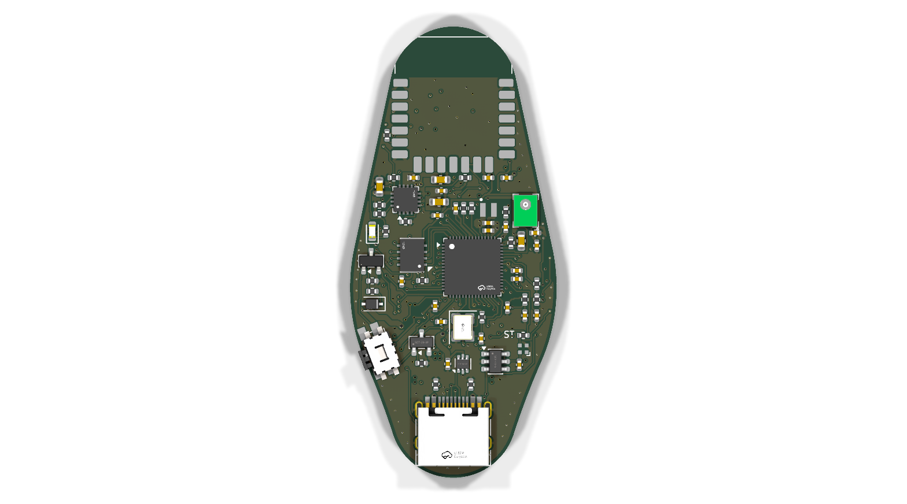
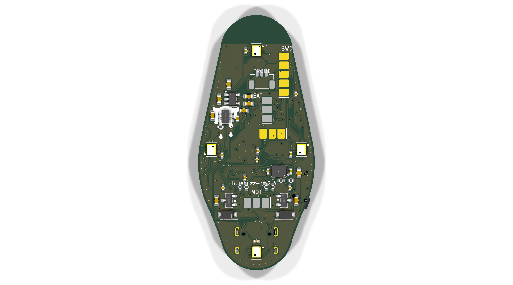

rm2 variant: RP2350A + RM2, USB-C the only connector, pad rows for every other lead. Passives re-placed by the pin
each serves, then everything moved to the front; the page's viewer now shows this board. Later the same day: load cell and
pressure port dropped for a 2 × 2 DPS368 tactile array on the back, an LSM6DS3TR-C IMU added, USB-C moved to the bottom edge,
all trace bends at 45°.
Where it stands
The whole design is generated from scripts/circuit.py and design.yaml by the
bike-tracker's pipeline (cd rm2 && python3 build.py): schematic drawn and verified against the netlist,
board placed from a table (each passive beside the pin it serves, all on the front), routed by freerouting around a set of
hand-laid pre-routes with scripted planes, keepouts and stitching, closed by the grid router, DRC'd, audited and exported
for JLCPCB. Routing is being closed; not ordered. See README.md for the pipeline and
the decisions, and out/ for the latest renders, copper layers and the 3D view. Every component choice, with datasheet and schematic excerpts:
docs/components/.


Board viewer — schematic, copper, 3D
Built by pcbview from out/bluebuzz-rm2.kicad_pcb and out/bluebuzz-rm2.kicad_sch as they stand (cd rm2 && python3 build.py --only site). Full-window viewer · the nRF board's viewer.
Sheets
1.0×
Keys: + and − zoom, 0 fit. Drag to pan; scroll or double-click to zoom.
The dot puts a layer on top at full opacity; the box says whether it is drawn at all.
1.0×
Keys: 1–9 pick a layer, s solo, a all, m mirror, 0 fit. Click a part for its pane; coordinates are pcbnew’s, in millimetres.
The model loads when this tab is open.
bluebuzz-rm2 rev A
The RP2350A + Raspberry Pi Radio Module 2 board, 28 x 44 mm, six layers: Wi-Fi and Bluetooth Classic + LE (so it can be an A2DP audio sink) and USB audio over its USB-C on the bottom edge, the only connector; battery, motors and SWD/boot are SMT pad rows on the back. Sensing is five Infineon DPS368 barometers on the back, cast in soft elastomer after Tenzer, Jentoft & Howe 2014, plus an LSM6DS3TR-C IMU. Generated from scripts/circuit.py by the bike-tracker's pipeline.
- Source
out/bluebuzz-rm2.kicad_pcbout/bluebuzz-rm2.kicad_sch- Board
- 28 × 44 mm6 copper layers, 1.6 mm thick
- Parts
- 109 footprints91 on the front, 18 on the back
- Copper
- 71 nets, 1,103 track segments, 252 vias1,546 mm of routed track
- Schematic
- 1 sheetUser
- 3D
- 102 of 109 parts drawn from a model6 name no model (D2, J2–J5, U7)
- Drawn as boxes
- L1
${KICAD7_3DMODEL_DIR}/Inductor_SMD.3dshapes/AOTA-B201610SR47MT.STEP: no such filea box the size of the courtyard stands in for each; a[models]entry in the project file can name a stand-in model
Built 2026-10-18 23:47 by pcbview from the KiCad files above:
python3 -m pcbview build pcbview.toml. Nothing here is drawn by hand — the layer plots, the model and the
sheets are KiCad’s own exports.
One generated sheet, drawn block by block by scripts/gen_schematic.py and verified against scripts/circuit.py net for net.
F = every part and its escapes (the QSPI lines to the flash are hand-laid), In1 = solid ground, In2 = signals (the QSPI lanes, PG_N down the left side), In3 = the VSYS pour, In4 = solid ground, B = the pad rows and the wiring between the front parts. The empty strip across the top is the RM2's RF keep-out.
Every part wears its LCSC model except the RM2, which has no public model and shows as its pads. Click a part for its LCSC number and pin nets.
The earlier board: nRF52840 module, JST connectors (top level)
The first revision used an EBYTE E73-2G4M08S1C (nRF52840) with its ceramic antenna at the bottom edge,
JST connectors for the battery, motors, load cell and pressure sensor and Tag-Connect SWD pads: 34 × 44 mm, 4 layers,
parts on both sides. It is routed, DRC-clean and exported (out/jlcpcb/). Built from the top-level
scripts/ (python3 build.py).
Board viewer (schematic / copper / 3D) · renders and layers · README.md
What is on it
| MCU + radio | RP2350A (QFN-60) with W25Q32 QSPI flash, 12 MHz crystal, 3.3 µH core inductor; Raspberry Pi RM2 (CYW43439) on gSPI, antenna end at the top edge, the top 5 mm of the board copper-free on every layer |
|---|---|
| Power | USB-C on the bottom edge (the only connector) → USBLC6 ESD → BQ24074 (500 mA charge, 1 A input, power path) → VSYS (an inner-layer pour) → TLV75533 3.3 V. TPS22918 switches the sensor rail. Cell on two pads (BAT). |
| Motors | Two channels: AO3400A low-side FET from VSYS, B5819W flyback, 22 µF bulk each, gate resistor and pull-down at the gate. PWM on GPIO0/1. Three pads (MOT): VSYS M1 M2. 1 A per channel. |
| Touch | Four Infineon DPS368 barometers on the back in a 2 × 2 grid (6 × 8 mm), to be cast in soft elastomer after Tenzer, Jentoft & Howe 2014 (vacuum-degassed so the rubber fills the ports; a load on the surface reads as pressure). SPI1 on GPIO10-12 with one chip select each (GPIO13-16), on the switched rail, 100n at every sensor. |
| Motion | ST LSM6DS3TR-C 6-axis IMU on I2C1 (GPIO6/7, 4.7k pull-ups), INT1/INT2 on GPIO17/18, on the always-on rail for wake-on-motion. |
| UI / debug | Side button, status LED, charge LED, 1M/1M battery divider into ADC0, five pogo pads (SWD) on the back under the radio: SWDIO SWCLK RUN BOOT GND. Firmware: pico-sdk, BTstack A2DP sink, TinyUSB audio. |
Working
- Project registered on port 8048
- rm2 circuit (95 parts, 65 nets) with every part's LCSC number checked against JLCPCB's parts search; schematic verified against the netlist
- rm2 placed: every part on the front beside the pin it serves except the sensor array on the back, no courtyard overlaps, nothing in the RF keep-out
- rm2 routing: freerouting plus hand-laid pre-routes for the nets it never closed (QSPI, VBAT, PG_N, PWM, USB, LX, WL_CS); last runs ended within a few open nets
- nRF board: routed (516 track segments, 212 vias), 0 DRC errors, 0 unconnected, audit clean; gerbers, BOM and pick-and-place in
out/jlcpcb/
Next up
- Check the antenna keepout against EBYTE's own E73 keep-out drawing (not retrievable 2026-10-17)
- Pick the motors and cell; confirm 1 A per channel and the 500 mA charge rate suit them
- Decide the pressure sensor (analog ratiometric or I2C) and confirm the pinout of its cable
- Firmware: tristate HX_SCK before gating the sensor rail; UICR as needed
Open questions
- JST SH 5-way stock at LCSC was 99 pieces; swap to a 4-way (drop I2C) if it stays scarce?
- Smaller still? The right edge is full of connectors (battery, 4-way motor, pressure, load cell fill 39 of 44 mm) and the width is module + IC column + connector depth; a top-entry JST PH for the motors would buy ~4 mm of height.
Blocked on
- Nothing.
Log
Pipeline copied from bike-tracker; circuit, parts, schematic, placement (34 × 44, double-sided), routing scripts
and audit written for this board. Second motor channel added on a shared 4-way lead.
Project created and registered with the hub. Status page scaffolded.